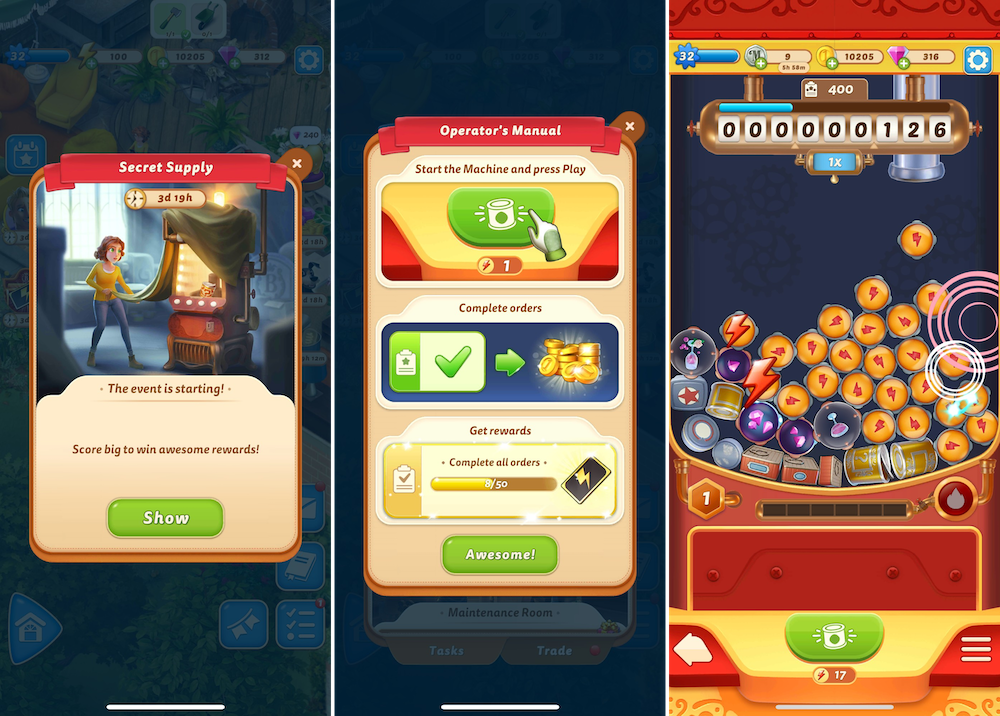
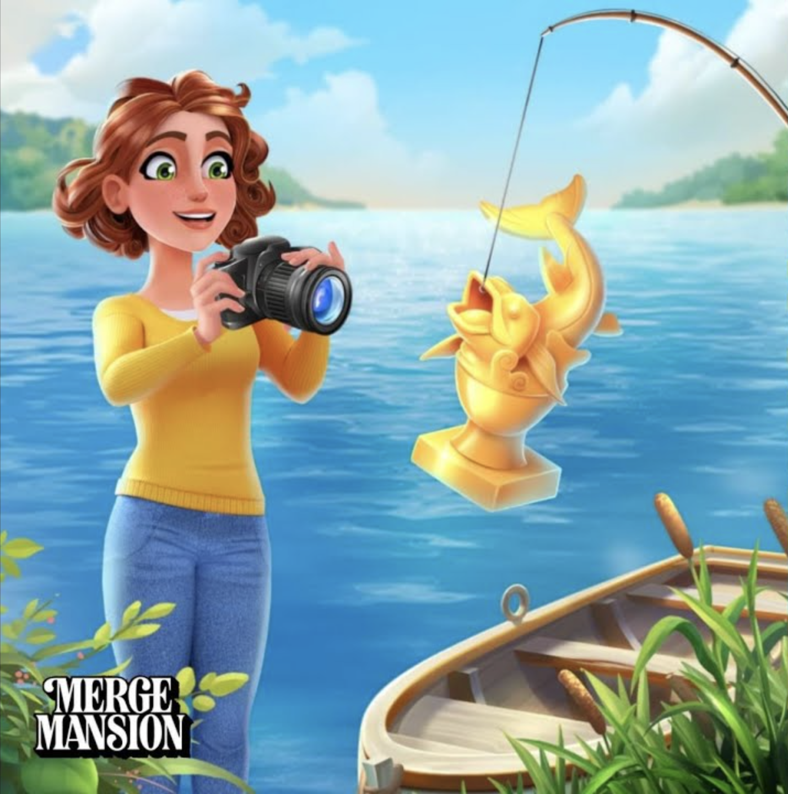
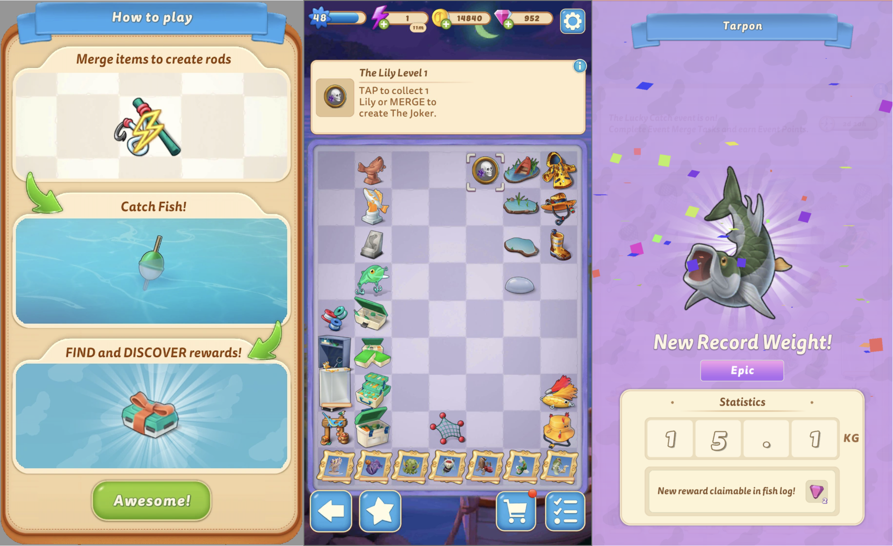
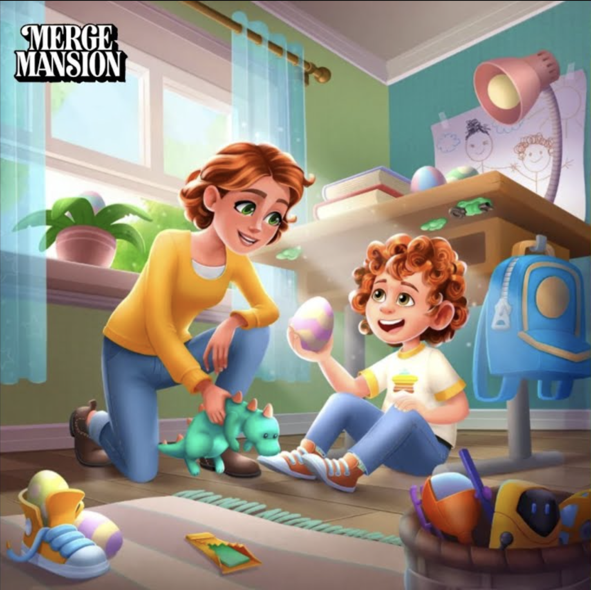

Overview
In Merge Mansion, I started by working on a few content updates and designing a season pass feature. Over the two years I spent on the project, I worked on systems design, economy design, UX, and user research.
To date, the projects listed on this page have generated tens of millions of dollars in revenue.
New Games - Merge Plaza & Havisham Park
At the end of my time at Metacore, I worked on the New Games team for about a year. We built the first game with a very small development team. I was the only game designer, handling all systems design and economy design. The artist and I collaborated closely on UX design.
When the first project didn't meet our goals, we formed a larger team and shifted to a story-focused game. This new direction achieved much better retention and met our initial goals. On this larger second project, I worked on various system designs and economy design.
On the Merge Plaza project, we focused on simple and casual core merge gameplay that's easy to jump into. Our intense focus on simplicity created many challenges, which we got to solve in cool ways. We conducted extensive user testing to refine the game's UX and systems through an iterative process.
Our goal was to create a game flow with highs and lows of varying intensity. To achieve this, we built a system that dynamically increased item production based on the player's available energy.
I worked on the merge board systems for the project that became Havisham Park, focusing primarily on the initial versions of the game's task system.
Live-Ops - Secret Supply Mini Game
Award-winning Secret Supply is a mini-game system in Merge Mansion that activates for a limited time on a regular basis. Players engage with a fun, physics-based, casino-like machine that spits out random items that automatically merge inside. Our goal was to create a short dopamine loop; one more try after another. In which we succeeded.
I led the design, focusing primarily on systems while collaborating with product management, economy designers, and UX designers in their respective areas. The project was extremely innovative and, because of that, extremely challenging and intense. I’m really glad for the recognition it received.
Live-Ops - Lucky Catch Mini Game
Lucky Catch is one of the best-performing features I designed for Merge Mansion. It has since been copied by many other games, likely because of its success. The feature is a limited-time mini-game where players build fishing rods on a merge board and use them to catch fish of varying types and rarities. Players fill their fish collection through this catch-and-release loop.
The simple mechanics combined with random outcomes proved highly engaging. This design heavily inspired Secret Supply from that perspective. I was the sole designer on this feature, handling systems design and economy design, and collaborating on UX and product decisions.
Live-Ops - The Great Bake-Off Mini Game

The Great Bake-Off was the first competitive feature we introduced to Merge Mansion. Based on our user research, I designed it to appeal to both competitive and non-competitive players. During the event, players engaged with a limited-time merge board featuring a simple loop: spawn eggs with chickens, merge them into cakes, earn competition points, and progress through non-competitive reward tracks. This feature also introduced a secondary energy system to the game for the first time, allowing players to engage with side content without spending their valuable main energy.
Players loved the feature for its simplicity and because they could play without spending their precious main energy. However, the first versions of the secondary energy provided too much extra play time. The simple gameplay loop, the secondary energy system, and its challenges all greatly inspired the Lucky Catch mini-game I later designed. I designed the entire feature, focusing primarily on systems design and economy design, while collaborating on the UX.

Live-Ops - Easter Egg Hunt Mini Game
The Easter Egg Hunt was the first limited-time mini-game feature in Merge Mansion where we simplified the progression loop from "doing tasks" to simply finding and collecting Easter egg items on the merge board. I also led an initiative to tell the story visually through item designs by collaborating with the story team, which received positive recognition by the fans.
Many players loved the more streamlined experience, but playtests revealed that the board's item economy was quite complex. This complexity strongly inspired the Great Bake-Off feature I worked on next. I designed this entire feature, focusing on systems design and economy design while collaborating on UX and product management.